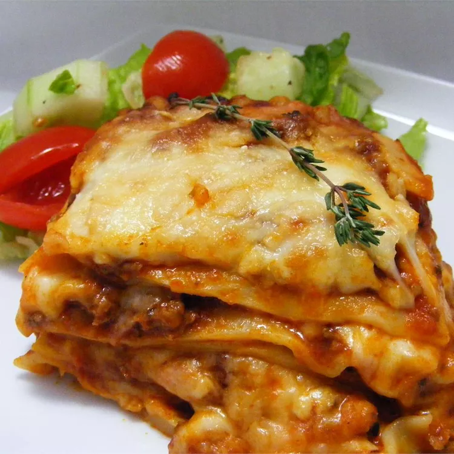

Go back
Lasagna recipe

Description
This basic meat lasagna with provolone, mozzarella, ricotta, and Parmesan is very easy to make.
Ingredients
Sauce
- 1 tablespoon olive oil
- 1 small onion
- 4 cloves of garlic
- 500 grams of ground beef
- 1 teaspoon garlic powder
- 1 jar sausage flavored spaghetti
- 1 can of tomato sauce
- 1 teaspoon dried oregano
Lasagna
- 1 (8 ounce) package shredded mozzarella cheese
- 1 (8 ounce) package shredded provolone cheese
- 1 (15 ounce) container ricotta cheese
- quarter cup milk
- 2 large eggs
- half a teaspoon dried oregano
- 9 no-boil lasagna noodles
- quarter cup grated Parmesan cheese
Steps
- Preheat the oven to 375 degrees F (190 degrees C).
- Make the sauce: Heat oil in a large saucepan over medium-high heat. Add onion and garlic; cook and stir until translucent, about 5 minutes.
Add ground beef and garlic powder; cook and stir until browned and crumbly, 5 to 7 minutes. Drain and discard grease.
Add spaghetti sauce, tomato sauce, and oregano; cover and simmer for 15 to 20 minutes.
- Make the lasagna: Mix mozzarella and provolone together in a medium bowl. Mix ricotta, milk, eggs, and oregano together in another bowl.
- Ladle sauce (just enough to cover) into the bottom of a 9x13-inch baking dish.
Layer sauce with three lasagna noodles, more sauce, ricotta mixture, and mozzarella mixture; repeat once more using all of remaining cheese mixtures.
Layer with remaining three lasagna noodles and remaining sauce, then sprinkle Parmesan over top.
- Cover and bake in the preheated oven for 30 minutes. Uncover and continue to bake until cheese is melted and top is golden, about 15 minutes longer.